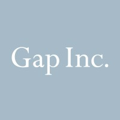
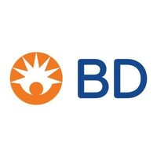

Software Engineer/DevOps
Gap Inc- American worldwide clothing retailer
06/2021-Present
Description:
Worked with a team of top-tier DevOps Engineers on the Cloud Platform team.
Contributed to the continuous automation, optimization, and modernization initiatives of Gap's Cloud
Platform.
Worked in a collaborative cross-organizational environment - including meetings, requirements
gathering,
estimations, design sessions, and iterative development.
Support customers in successfully leveraging Cloud Platform automation & capabilities.
Highlights
Designed and deployed cloud automation resources using Azure, ARM Templates, Jenkins, Oracle Cloud
Infrastructure, Jira, Confluence, and GitHub.
Develop a holistic solution, using Python and API calls, to identify and eliminate all racially
oppressive terms from Gap Inc's internal systems (Jira, Confluence, Service-Now, GitHub Enterprise)
for the company-wide 2021 Hackathon Innovation Day.
Software Support Engineer
Becton, Dickinson and Company - American multinational medical technology company
09/2020-06/2021
Description:
Performed tier 2 interactive technical troubleshooting on medical devices, serving a team of 15
technical support specialists in the entire customer service lifecycle using Salesforce and
Microsoft Azure.
Worked in a collaborative cross-organizational environment - including meetings, requirements
gathering,
estimations, design sessions, and iterative development.
Support customers in successfully leveraging Cloud Platform automation & capabilities.
Highlights
Developed a solution to enhance the troubleshooting experience for BD customers, by providing remote
visual feedback of the capital equipment to the technical support team through a collection of
images, documentation files, and software-generated interactive menu simulators, which resulted in
more effective customer support and higher customer satisfaction.
Designed and maintained a database solution to facilitate enhanced remote access and management of
documentation files, resulting in a productivity increase of 12% based on internal performance
metrics.